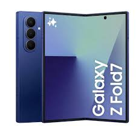

Galaxy Z fold 7
Il Samsung Galaxy Z Fold 7 rappresenta un’evoluzione concreta del pieghevole più iconico del mercato. Più sottile, più leggero, ma anche più maturo, questo dispositivo si presenta come un upgrade che punta dritto alla sostanza. 1.170 euro
Galaxy watch ultra
Un orologio sportivo, pensato per resistere all'acqua e a temperature tra i -20°C e 55°C. Con galaxy watch ultra possiamo tenere conto in ogni momento dei nosrti dati in un unico numero, e grazie all'AI potenziata abbiamo un sistema GPS a doppia frequenza. 529 euro

Samsung galaxy book 5
Con Galaxy Book5 potrai fare ogni cosa in modo più intelligente. Funzionalità smart come AI Select e Rimasterizza Immagine sono perfette per le attività quotidiane, supportate da prestazioni affidabili e una lunga durata della batteria. 1.299 euro
Galaxy buds3 FE
Tutto il comfort di un design testato e affidabile. La forma ergonomica degli auricolari Galaxy Buds3 FE assicura una perfetta aderenza, per ridurre la pressione e migliorare la qualità del suono, così potrai indossarli ancora più a lungo. 119 euro